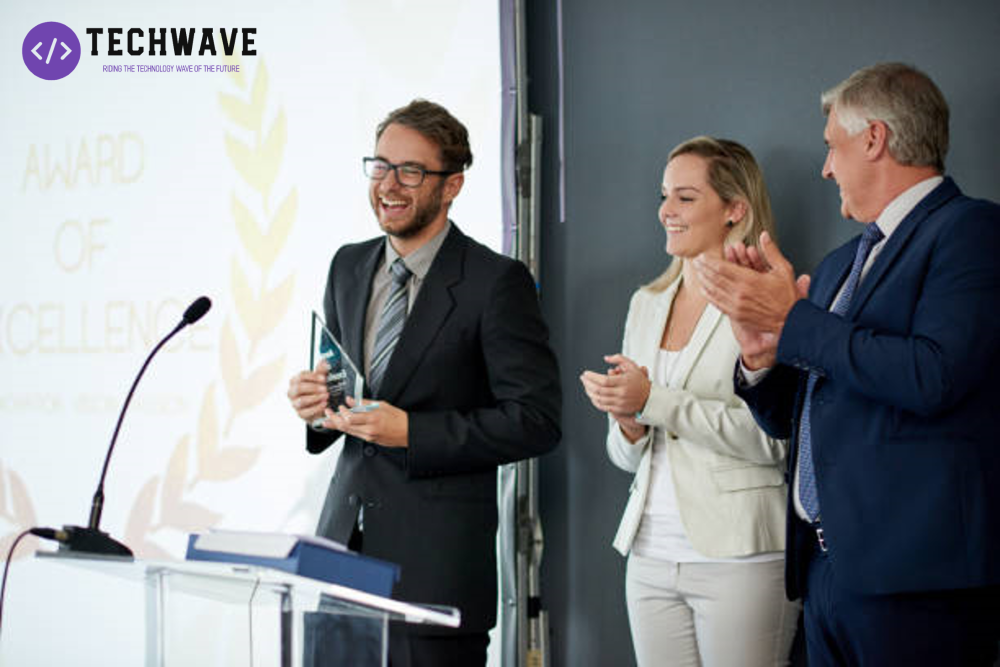

TechWave selected as The Best Tech Support Company of the Year 2022
TechWave, a leading technology consulting and solutions provider, has been recognized as the Best Tech Support Company of the Year by Tech Reviewer,
an independent research and analysis firm. This prestigious award recognizes TechWave's commitment to excellence in providing high-quality technology
support services to its clients.
Expertise, innovation, client-centric approach, quality, and customer satisfaction are some of the key factors that led to TechWave being selected for
this award. With a team of highly skilled and experienced professionals, TechWave has been delivering successful technology solutions for businesses
across various industries.
Innovation is at the core of TechWave's DNA. The company continuously invests in the latest technologies, tools, and

Co-founder John Doe receving the award of: The Best Tech Support Company of the Year 2022
methodologies to provide cutting-edge
solutions to its clients. The focus is always on delivering value to clients and helping them achieve their business goals.
TechWave takes a client-centric approach, understanding that each client's business needs are unique. The company works closely with its clients to tailor
solutions that address their specific challenges and requirements. This approach has led to long-term relationships with clients, who have come to trust
TechWave as a reliable partner in their technology journey.
Quality is a top priority at TechWave. The company follows industry-standard quality processes and best practices to ensure that its solutions are reliable,
scalable, and secure. TechWave's commitment to quality is reflected in the satisfaction of its clients, who have consistently rated the company highly in
terms of quality of service.
Customer satisfaction is the ultimate measure of success at TechWave. The company takes pride in the fact that a large percentage of its business comes from
repeat clients and referrals. This is a testament to the quality of TechWave's work and the level of satisfaction of its clients.
"We are honored to receive this award and be recognized as the Best Tech Support Company of the Year," said Marella Morad, CEO and Co-founder of TechWave.
"This award is a reflection of our team's dedication and hard work in delivering high-quality technology support services to our clients.
We remain committed to providing innovative solutions and excellent service to our clients and continuing to be a trusted partner."